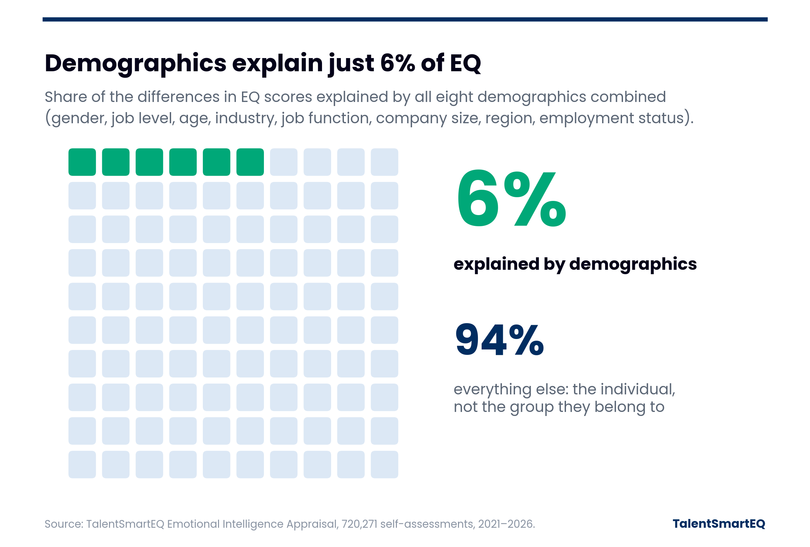

TalentSmartEQ Research
Demographics explain just 6% of EQ

What the data shows
- We looked at all eight background details we collect together: gender, job level, age, industry, job function, company size, region and employment status.
- Combined, they explain about 6% of the differences in EQ scores. The other 94% comes down to the individual.
- People who retake the assessment after developing their skills score about five points higher on average.
What it means
Group patterns are real but small. Knowing someone’s title, age or gender tells you very little about their EQ, and emotional intelligence is a set of skills people can build.
Source: 720,271 Emotional Intelligence Appraisal self-assessments, 2021–2026. Scores are on a 0–100 scale.
Copyright 2026 © TalentSmart Inc. All rights reserved.